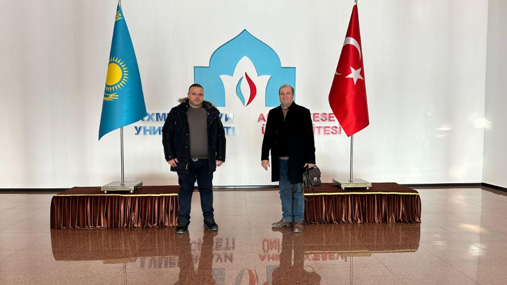
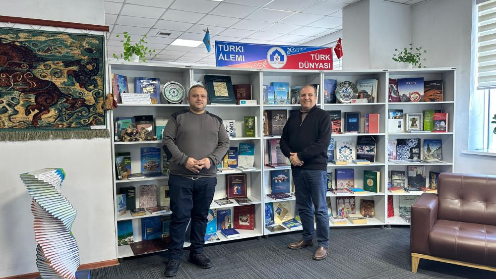
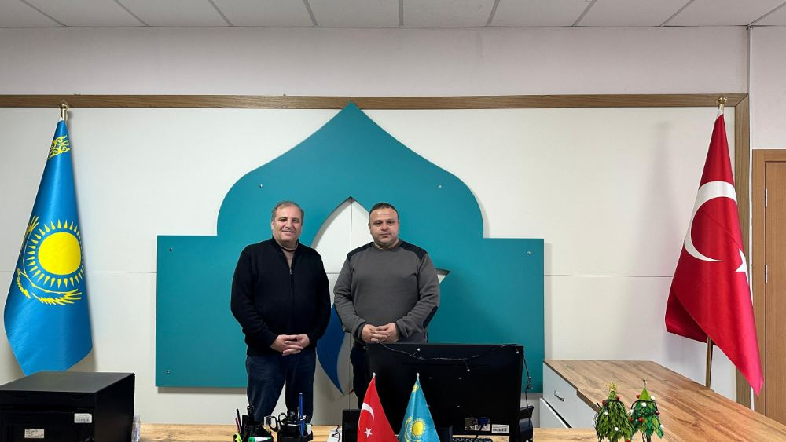
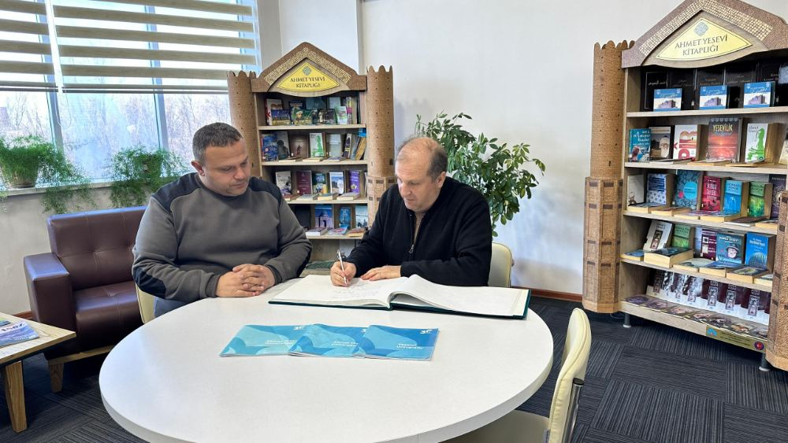
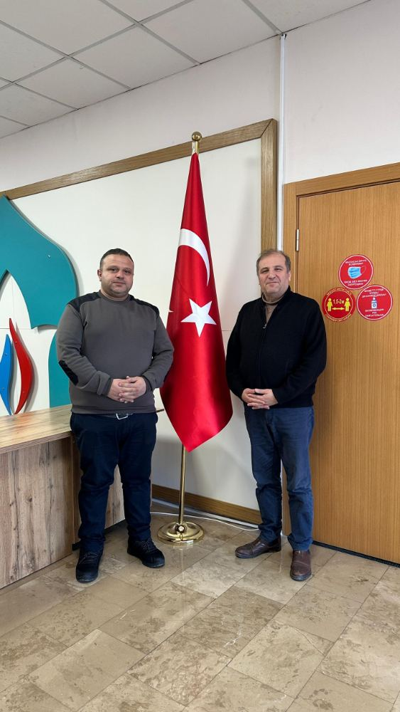

Haber arşivi
Bölüm Başkanımız Doç. Dr. Arif Yılmaz Ahmet Yesevi Uluslararası Türk Kazak Üniversitesi’ni Ziyaret Etti
28 Aralık 2024, Uşak Üniversitesi Türk Dili ve Edebiyatı Bölümü
Bu sayfa, Uşak Üniversitesi Türk Dili ve Edebiyatı Bölümünün internet sitesinde yayımlanan haberin kopyasıdır. Haber metni değiştirilmeden aktarıldı.
Uşak Üniversitesi İnsan ve Toplum Bilimleri Fakültesi Türk Dili ve Edebiyatı Bölümü Başkanı Doç. Dr. Arif Yılmaz, Kazakistan’ın Türkistan şehrinde bulunan Ahmet Yesevi Uluslararası Türk Kazak Üniversitesi Türkoloji Bölümünü ziyaret etti.
Ziyaret sırasında Doç. Dr. Yılmaz, Ahmet Yesevi Uluslararası Türk Kazak Üniversitesi Türkoloji Bölüm Başkanı Dr. Kenan Semiz ile bir görüşme gerçekleştirdi. Görüşmede iki bölüm arasında akademik ve kültürel iş birliği olanakları ele alındı. Ortak projeler, akademik çalışmalar ve öğrenci değişim programları gibi konularda fikir alışverişinde bulunuldu.
Doç. Dr. Yılmaz, ziyaret kapsamında üniversitenin kütüphanesini ve kültürel alanlarını gezerek, akademik yapısı ve sunulan imkanlar hakkında bilgi aldı. Ayrıca, Dil Öğretim Merkezi’ni ziyaret ederek, dil öğrenimi üzerine yapılan önemli çalışmalara dair ayrıntılı bilgiler edindi.
Ziyaretini Ahmet Yesevi Uluslararası Türk Kazak Üniversitesi’nin “Anı Defteri”ne yazdığı mesajla taçlandıran Doç. Dr. Yılmaz, iki kardeş ülke arasındaki kültürel bağların ve ortak akademik çalışmaların önemine vurgu yaptı. Mesajında, Türk Dünyası’nın birlikteliğini ve ortak mirasını temsil eden bu üniversitenin, köklü bağların geleceğe taşınmasında önemli bir rol üstlendiğini ifade etti. Üniversitenin, ortak tarih ve dil bilincini güçlendirme misyonunu başarıyla yürüttüğünü belirten Yılmaz, bu bağlamda Türkoloji alanında yürütülen çalışmaların artarak devam etmesini temenni etti. Bölüm Başkanımız, Başta Dr. Kenan Semiz olmak üzere, tüm hocalara misafirperverlikleri için teşekkür etti.





Haberin aslı Uşak Üniversitesi Türk Dili ve Edebiyatı Bölümünün sitesinde yayımlandı.
Bu kopya 15 Kasım 2026’de alındı.